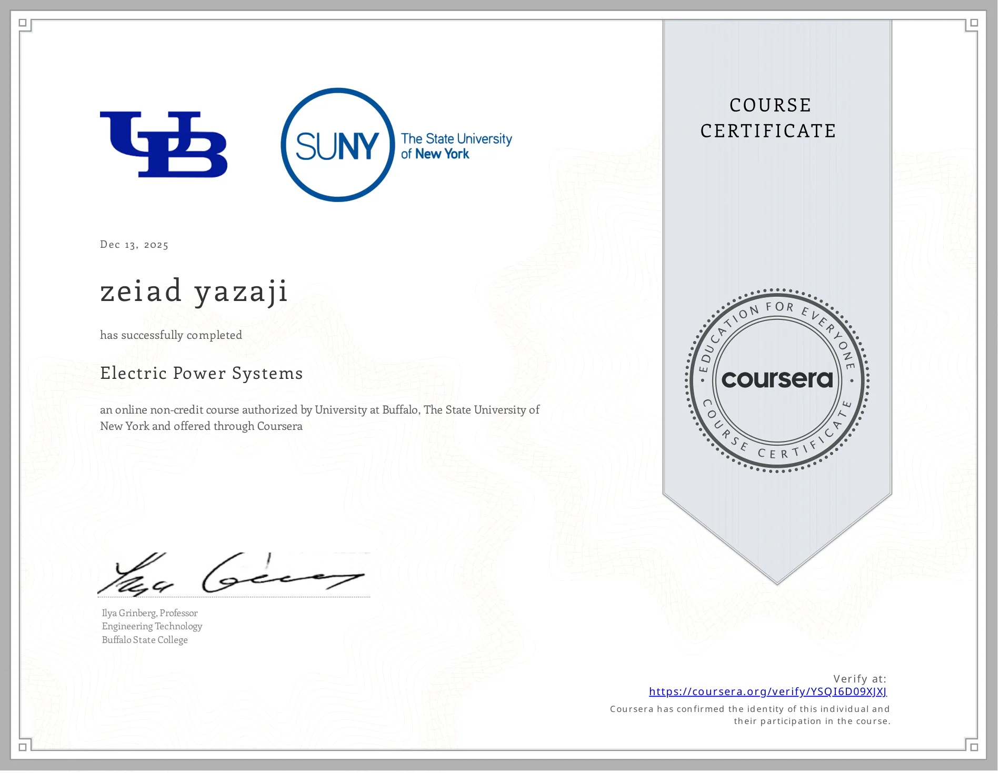
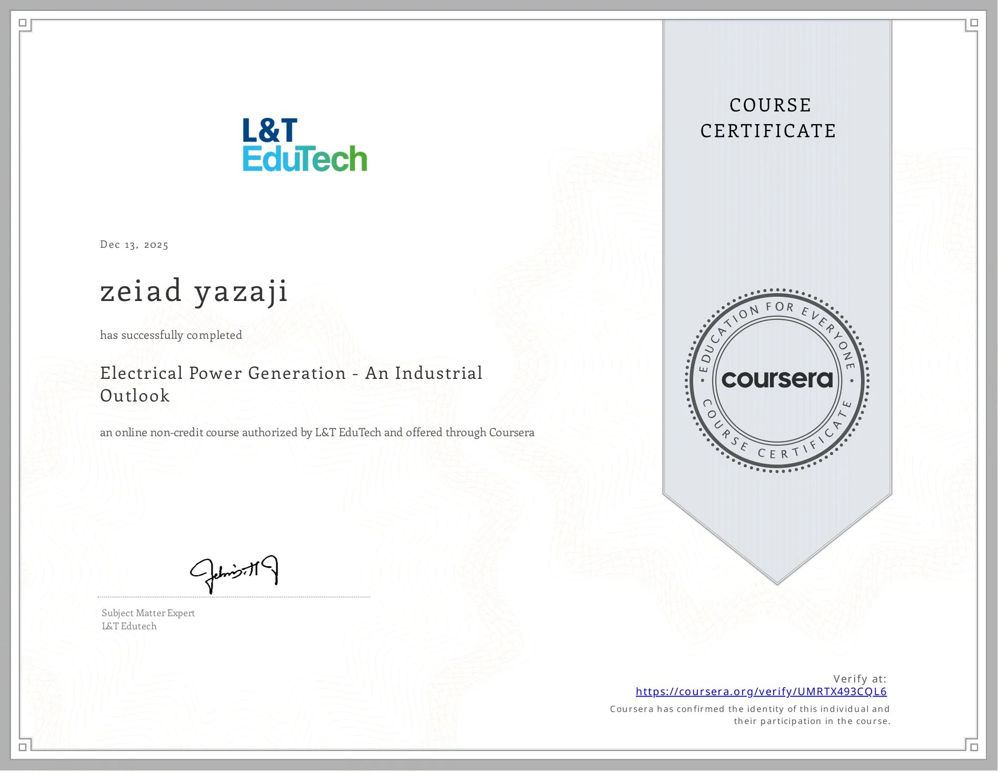

PLC logic and I/O mapping
Control narratives, ladder logic and function-block principles, analog/digital I/O lists, interlocks and fail-safe states.
PLC and industrial automation: programmable control, I/O integration, troubleshooting and commissioning.
Programmable Logic Controllers (PLCs) coordinate machines, instrumentation and industrial sequences. The engineering approach combines control logic, electrical safety, verification, field diagnostics and reliable SCADA integration.
Control narratives, ladder logic and function-block principles, analog/digital I/O lists, interlocks and fail-safe states.
Device communications, HMI tags, alarms, commissioning records and maintainable plant control interfaces.
Signal tracing, controlled start-up, functional testing, electrical drawings, commissioning checklists and change documentation.
Portfolio résumé and Control Panels profile reference Siemens S7-400 control projects; no unsupported plant names or production metrics are asserted.
Experience included electrical control panels, SCADA, relay-related documentation, testing, wiring and troubleshooting — related control engineering, not automatically a claim of programming a specific PLC on each site.
These are professional context summaries, not claims about confidential clients, specific equipment inventories or measured outcomes that have not been independently documented.


Displayed credentials concern electrical engineering and power systems, not an issued PLC-vendor certification. Siemens S7-400 is referenced only where supported by existing résumé context.